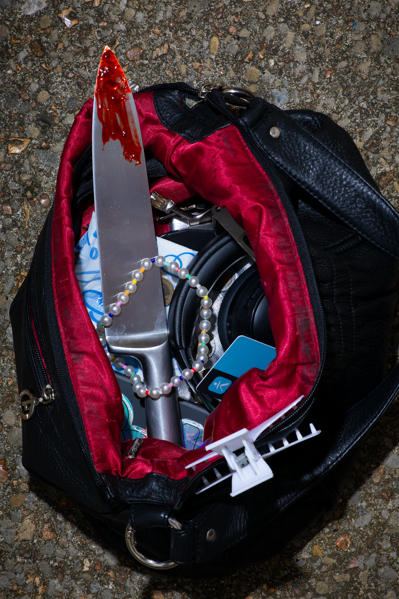
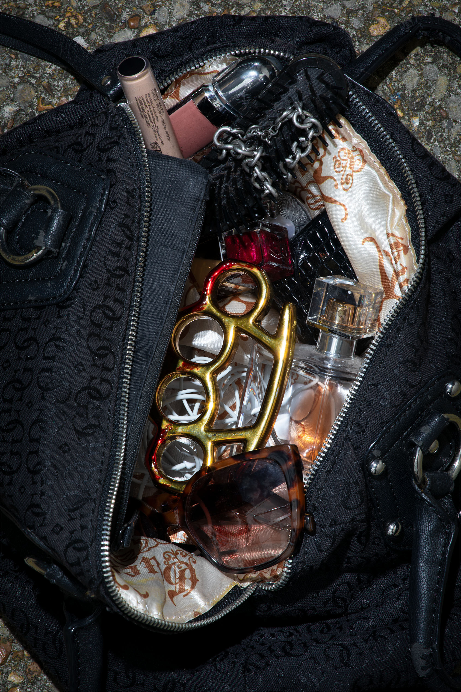
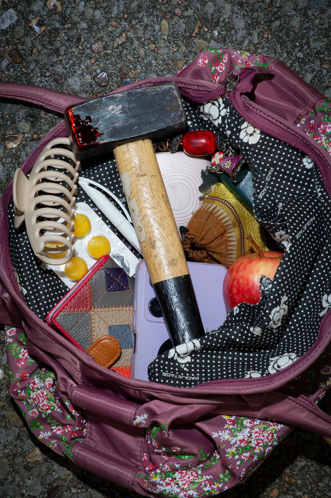

Que portent les femmes ?
- Client
- Gaze Magazine
- Rôle
- Direction artistique, photographie, retouches
- Demande
- Série photographique qui traite de la violence et de l'auto-défense féminine.
“Mais des femmes sentent la nécessité de l'affirmer encore : la violence n'est pas une solution.
Pourtant, le jour où les hommes auront peur de se faire lacérer la bite à coups de cutter quand ils serrent une fille de force,
ils sauront brusquement mieux contrôler leurs pulsions "masculines", et comprendre ce que "non" veut dire.”
King Kong Theory, Virginie Despentes



